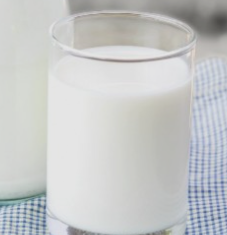

For your Health
HOME
Exercise
Food
Sleep
Stress
Sleep
수면은 일상의 피로와 긴장, 정신적 스트레스를 풀어주고, 뇌기능을 회복시켜줍니다. 충분한 수면은 건강 생활의 지름길로 하루 평균 7~8시간 수면을 권장합니다.
Foods for deep sleep
견과류
체리
우유

Tips for deep sleep
취침 3시간 전에 식사 끝내기
가벼운 운동하기
입욕, 샤워는 취침 1-2시간 전에 하기
일정한 시간에 자고 일어나기
적정 온도, 습도 유지하기
밝은 조명은 끄고 자기